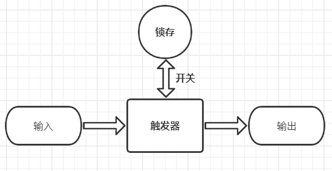
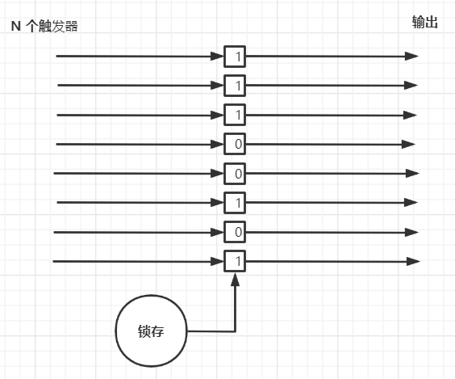
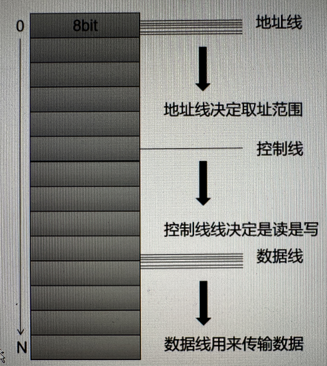
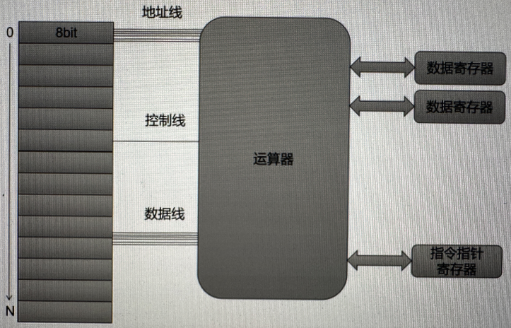
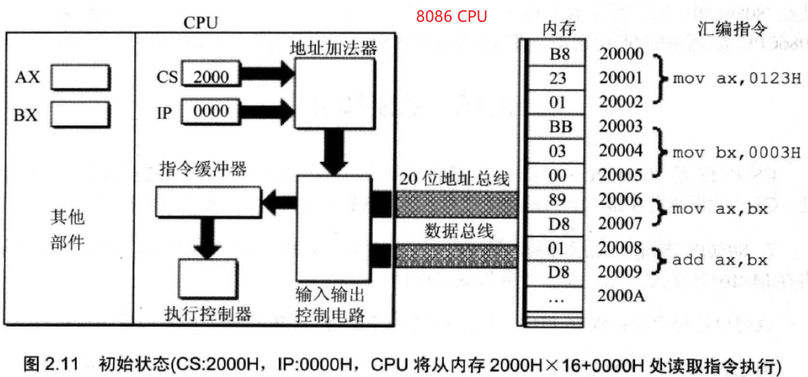
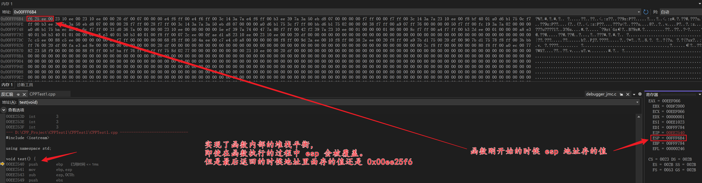
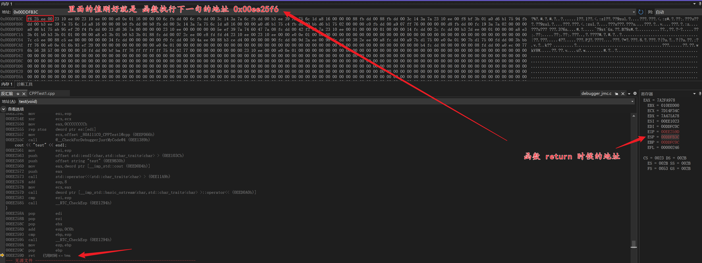
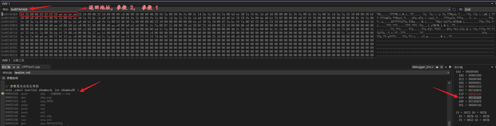

寄存器基础
概念
- 计算机常见架构：x86、arm、MIPS 等
触发器

寄存器

内存

8 位处理器雏形

- 16 位、32 位、64 位处理器
通用寄存器
8 位
- AL
- BL
- CL
- DL
- AH
- BH
- CH
- DH
16 位（通用寄存器共有 8 个）
- AX -- 累加器
- BX -- 基址寄存器
- CX -- 计数寄存器
- DX -- 数据寄存器，字的乘、除运算，间接的输入输出
- BP -- 基址寄存器，基指针，存储器指针、存取堆栈的指针
- SP -- 堆栈指针，堆栈的==栈顶指针==
- SI -- 变址寄存器，存储器指针、串指令中的==源==操作数指针（用来存放偏移）
- DI -- 变址寄存器，存储器指针、串指令中的==目的==操作数指针（用来存放偏移）
【段基址，实模式】
32 位（通用寄存器共有 8 个，和 16 一样，多了个 E）
- EAX
- EBX
- ECX
- EDX
- EBP
- ESP
- ESI
- EDI
【段选择子，保护模式，段描述符】
64 位
8 位寄存器在 16 位寄存器中，而 16 位寄存器在 32 位寄存器中。或者说：32 位寄存器中，取 0 到 15 位的部分组成 16 位寄存器，16 位寄存器对半分，成为 8 位寄存器。
数据寄存器（通用）
主要用来保存操作数和运算结果等信息，从而节省读取操作数所需要占用总线和访问存储器的时间。
- 32 位 CPU 有 4 个 32 位的通用寄存器 EAX、EBX、ECX、EDX。对于低 16 位的数据的存取，不会影响高 16 位的数据。
- 这些低 16 位的寄存器分别命名为：AX、BX、CX 和 DX，这和 16 位 CPU 的命名是一致的。
- 4 个 16 位寄存器又可分割成 8 个独立的 8 位寄存器（AX：AH-AL、BX：BH-BL、CX：CH-CL、DX：DH-DL）。
每个寄存器都有自己的名称，可独立存取。
在 16 位 CPU 中，AX、BX、CX 和 DX 不能作为基址和变址寄存器来存放存储单元的地址，但在 32 位 CPU 中，其 32 位寄存器 EAX、EBX、ECX 和 EDX 不仅可传送数据、暂存数据保存算数逻辑运算结果，而且也可作为指针寄存器。所以这些 32 位寄存器更具有通用性。
AH(8 位) AL(8 位) AX(16 位) (AX 和 AL 又称累加器，Accumulator)
BH(8 位) BL(8 位) BX(16 位) (BX 又称基址寄存器,唯一作为存储器指针使用寄存器，Base Register)
CH(8 位) CL(8 位) CX(16 位) (CX 用于字符串操作，控制循环的次数，CL 用于移位，Count Register)
DH(8 位) DL(8 位) DX(16 位) (DX 一般用来做 32 位的乘除法时存放被除数或者保留余数，Data Register)
指针寄存器（通用，Pointer Register）
主要用于存放堆栈内存单元的偏移量，指针寄存器不可分割为 8 位寄存器。
- SP -- 堆栈指针 (存放==栈顶==地址，Stack Pointer)
- BP -- 基址指针 (存放堆栈基址偏移，Base Pointer)
变址寄存器（通用，Index Register）
主要用于存放存储单元在段内的偏移量，变址寄存器不可分割为 8 位寄存器。
- SI -- 变址寄存器，存储器指针、串指令中的==源==操作数指针（用来存放偏移）
- DI -- 变址寄存器，存储器指针、串指令中的==目的==操作数指针（用来存放偏移）
段寄存器（非通用）
段寄存器是根据内存分段的管理模式而设置的。内存单元的==物理地址==由段寄存器的值和一个偏移量组合而成，这样可以用两个较少位数的值组合成一个可访问的较大物理空间的内存地址。【物理地址 = 段寄存器的值 + 偏移量】
- 16 位：【段基址，实模式】
- 32 位：【段选择子，保护模式，段描述符】
- 实方式：前 4 个段寄存器 CS、DS、ES 和 SS 与 16 位 CPU 中所对应的段寄存器的含义完全一致，内存单元的逻辑地址仍为
"段值：偏移量" 的形式。为访问某内存端内的数据，必须使用该段寄存器和存储单元的偏移量。- 保护方式：在此方式下，情况要复杂的多，装入段寄存器的不再是段值，而是称为
"选择子（Selector）" 的某个值。
16 位
- ES -- 附加段寄存器
- CS -- 代码段寄存器
- SS -- 堆栈段寄存器
- DS -- 数据段寄存器
32 位在 16 位的基础上增加两个
- FS -- 附加段寄存器
- GS -- 附加段寄存器
CS 为代码段寄存器【存段地址】，还有个与 CS 息息相关的寄存器叫
IP，为指令指针寄存器【存偏移地址】。
-
IP、EIP（Instruction Pointer）是存放下次将要执行的指令在代码段中的偏移量。- 32 位中由于每个段的最大范围为 64K，所以，EIP 中的高 16 位肯定都为 0，此时，相当于只用其低 16 位的 IP 来反映程序中指令的执行次序。
控制寄存器（非通用）
- IP -- 指令指针，32 位就是 EIP
- FLAG -- 标志寄存器，32 位就是 EFlags
标志寄存器（非通用）
- 进位标志 CF （Carry Flag），记录运算时最高有效位产生的进位值。
- 奇偶标志 PF （Parity Flag），用来为机器中传送信息时可能产生的代码出错情况提供检验条件。当结果操作数中 1 的个数为偶数时置 1，否则置 0。
- 辅助进位标志 AF （Auxiliary Carry Flag），记录运算时第 3 位（半个字节）产生的进位值。
- 零标志 ZF （Zero Flag），运算结果为 0 时 ZF 位置 1，否则置 0。
- 符号标志 SF （Sign Flag），记录运算结果的符号。结果为负时置 1，否则置 0。
- 溢出标志 OF （Overflow Flag），在运算过程中，如操作数超出了机器可表示数的范围称为溢出。溢出时 OF 位置 1，否则置 0。
- 追踪标志 TF（Trap Flag），当追踪标志 TF 被置为 1 时，CPU 进入单步执行方式，即每执行一条指令，产生一个单步中断请求，这种方式主要用于程序的调试。指令系统中没有专门的指令来改变标志位 TF 的值。
中断允许标志 IF（Interrupt-enable Flag），中断允许标志 IF 是用来决定 CPU 是否响应 CPU 外部的可屏蔽中断发出的中断请求。但不管该标志位何值，CPU 都必须响应 CPU 外部的不可屏蔽中断所发出的中断请求，以及 CPU 内部产生的中断请求。
- 当 IF=1 时，CPU 可以响应 CPU 外部的可屏蔽中断发出的中断请求；
- 当 IF=0 时，CPU 不响应 CPU 外部的可屏蔽中断发出的中断请求。
CPU 的指令系统中也有专门的指令来改变标志位 IF 的值。
- 方向标志 DF（Direction Flag），方向标志 DF 用来决定在串操作指令执行时有关指针寄存器发生调整的方向。在微机的指令系统汇总，还提供了专门的指令来改变标志位 DF 的值。
32位 标志寄存器增加的标志位
I/O 特权标志 IOPL（I/O Privilege Level）I/O 特权标志用两位二进制来表示，也称为I/O 特权级字段。该字段指定了要求执行I/O 指令的特权级。如果当前的特权级别在数值上小于等于 IOPL 的值，那么，该I/O 指令可执行，否则将发生一个保护异常。嵌套任务标志 NT（Nested Task），嵌套任务标志 NT 用来控制中断返回指令 IRET 的执行。具体规定如下：
- 当 NT=0 时，用堆栈中保存的值恢复 EFLAGS、CS 和 EIP，执行常规的中断返回操
- 当 NT=1 时，通过任务转换实现中断返回
重启动标志 RF（Restart Flag），重启动标志 RF 用来控制是否接受调试故障。
RF=0 时，表示“接受”调试故障，否则拒绝。在成功执行完一条指令后，处理机把 RF 置为 0，当接受到一个非调试故障时，处理机就把它置为 1。
虚拟 8086 方式标志 VM（Virtual 8086 Mode）
如果该标志的值为 1，则表示处理机处于虚拟 8086 方式下的工作状态，否则，处理机处于一般保护方式下的工作状态。
64 位 CPU 寄存器
x86-64CPU 在向后兼容的同时，更主要的是注入了全新的特性，特别的：x86-64 有两种工作模式，32 位 OS 既可以跑在传统模式中，把 CPU 当成 i386 来用；又可以跑在 64 位的兼容模式中，更加神奇的是，可以在 32 位的 OS 上跑 64 位的应用程序。
x86-64 中，所有的寄存器都是 64 位，相对 32 位的 x86 来说，标识符发生了变化，比如：从原来的 ebp 变成了 rbp。为了向后兼容，ebp 依然可以使用，不过指向了 rbp 的低 32 位。
x86-64 寄存器的变化，不仅体现在位数上，更加体现在寄存器数量上。新增加寄存器 r8 到 r15。加上 x86 原有的 8 个，一共 16 个寄存器。寄存器集成在 CPU 上，存取速度比存储器快了好几个数量级，寄存器多了，gcc 就可以更多的寄存器，替换之前的存储器堆栈使用，从而大大提升性能。寄存器的用途一般都涉及到函数调用，x86-64 有 16 个 64 位寄存器，分别是：
- rax -- 作为函数返回值使用
- rbx
- rcx
- rdx
- rsi
- rdi
- rbp
- rsp -- 栈指针寄存器，指向栈顶
- r8
- r9
- r10
- r11
- r12
- r13
- r14
- r15
- rdi，rsi，rdx，rcx，r8，r9 用作函数参数，依次对应第 1 参数，第 2 参数。。。
- rbx，rbp，r10，r11，r12，r13，14，r15 用作数据存储，遵循被调用者使用规则，简单说就是随便用，调用子函数之前要备份它，以防他被修改。
8086

- 在 8086 启动或者复位(CPU 刚开始运作)后，
CS = FFFFH, IP = 0000H，即最开始是从CS = FFFFH 开始读取指令的
函数调用约定
call
调用函数，call address。
push
pop
ret
jmp
地址跳转，jmp address。
函数调用流程：
# 调用
call address (如：12345)
push stack 下一行的地址【入栈 EIP】
jmp 12345【jmp 到 call 的地址】
# 函数结束，返回
ret 【函数结束】
pop eip 【将调用前入栈的下一行的地址出栈】
jmp eip 【jmp 到该地址】
栈（相对较小）
- 局部变量
- 参数
- 返回地址
- 每个空间：
地址:值 ，如 16 位就是 2 字节地址，2 字节值。
虚拟内存
- 属于进程自己的
- x86：32 根地址线，4 GB，只能用 3 GB，内核占 1 GB
x64：64 根地址线，x64 CPU 限制了只提供 48 位可用，共 256 TB。
- Windows 只能用 44 位，即 16 TB。
linux/windows 64位CPU内存限制_lionzl的博客-CSDN博客
1TB = 1024 GB = 2^40 bit 1GB = 1024 MB = 2^30 bit 1MB = 1024 KB = 2^20 bit 1KB = 1024 bit = 2^10 bit 2^10 = 1024 bit = 1KB 2^20 = 1024 KB = 1MB = 2^10 * 1024 bit 2^0 = 1 2^1 = 2 2^2 = 4 2^3 = 8 2^4 = 16 2^5 = 32 2^6 = 64 2^7 = 128 2^8 = 256 2^9 = 512 2^10 = 1024
调用约定
x86
- _cdecl
c/c++ 基本调用约定，调用方平栈，不定参数的函数可以使用，参数通过堆栈传递。 _stdcall
win32，被调方平栈，不定参数的函数无法使用，参数默认全部通过堆栈传递。1. 参数是从右往左传递的，也是放在堆栈中。 2. 函数的堆栈平衡操作是由被调用函数执行的。 3. 在函数名的前面用下划线修饰，在函数名的后面由 @ 来修饰并加上栈需要的字节数的空间（_sumExample@8）。_fastcall32 被调方平栈，不定参数的函数无法使用，前两个参数放入(
ECX,EDX)，剩下的参数压栈保存。表明了参数应该放在寄存器中，而不是在栈中，VC 编译器采用调用约定传递参数时，最左边的两个不大于 4 个字节（DWORD）的参数分别放在 ecx 和 edx 寄存器。当寄存器用完的时候，其余参数仍然从右到左的顺序压入堆栈。像浮点值、远指针和 __int64 类型总是通过堆栈来传递的。- _thiscall
类函数传参使用
x64
- _fastcall64 被调方平栈，不定参数的函数无法使用，前四个参数放入(
RCX,RDX,R8,R9)，剩下的参数压栈保存。 - System V：类 Linux 系统默认约定，前八个参数放入(
RDI,RSI,RDX,RCX,R8,R9)，剩下的参数压栈保存。
当栈顶指针 esp 小于栈底指针 ebp 时，就形成了栈帧，栈帧中可以寻址的数据有局部变量，函数返回地址，函数参数等。不同的两次函数调用，所形成的栈帧也不相同，当由一个函数进入另一个函数时，就会针对调用的函数开辟出其所需的栈空间，形成此函数的独有栈帧，而当调用结束时，则清除掉它所使用的栈空间，关闭栈帧，该过程通俗的讲叫做栈平衡。而如果栈在使用结束后没有恢复或过度恢复，则会造成栈的上溢或下溢，给程序带来致命错误。-- https://www.cnblogs.com/LyShark/p/15901950.html
- 栈结构在内存中占用一段连续存储空间，通过 esp 与 ebp 这两个栈指针寄存器来保存当前栈起始地址与结束地址，每 4 个字节保存一个数据。
- 堆栈的操作都是对一个字进行操作的，所以参数都是 4 个字节的。
- Win32 API函数绝大部分都是采用
__stdcall 调用约定的。WINAPI 其实也只是__stdcall 的一个别名而已。
#include <iostream>
using namespace std;
void test() {
cout << "test" << endl;
}
int main() {
test();
/*
test();
00082751 call 000814F1 // 在反汇编处 F11 跟进调试
// 查看寄存器
EAX = 00EEF066
EBX = 0117F000
ECX = 00EEF066
EDX = 00000001
ESI = 00EE1023
EDI = 00FFF784
EIP = 00EE25F1
ESP = 00FFF6B8
EBP = 00FFF784
EFL = 00000246
// 反汇编跟进调试
000814F1 jmp 00082650 // 继续跟进
// 来到函数主体
void test() {
00EE2540 push ebp
00EE2541 mov ebp,esp
00EE2543 sub esp,0C0h
00EE2549 push ebx
00EE254A push esi
00EE254B push edi
00EE254C mov edi,ebp
00EE254E xor ecx,ecx
00EE2550 mov eax,0CCCCCCCCh
00EE2555 rep stos dword ptr es:[edi]
00EE2557 mov ecx,offset _80A111C0_CPPTest1@cpp (0EEF066h)
00EE255C call @__CheckForDebuggerJustMyCode@4 (0EE1389h)
cout << "test" << endl;
00EE2561 mov esi,esp
00EE2563 push offset std::endl<char,std::char_traits<char> > (0EE103Ch)
00EE2568 push offset string "test" (0EE9B30h)
00EE256D mov eax,dword ptr [__imp_std::cout (0EED0D4h)]
00EE2572 push eax
00EE2573 call std::operator<<<std::char_traits<char> > (0EE11A9h)
00EE2578 add esp,8
00EE257B mov ecx,eax
00EE257D call dword ptr [__imp_std::basic_ostream<char,std::char_traits<char> >::operator<< (0EED0A0h)]
00EE2583 cmp esi,esp
00EE2585 call __RTC_CheckEsp (0EE1294h)
}
00EE258A pop edi
00EE258B pop esi
00EE258C pop ebx
00EE258D add esp,0C0h
00EE2593 cmp ebp,esp
00EE2595 call __RTC_CheckEsp (0EE1294h)
00EE259A mov esp,ebp
00EE259C pop ebp
00EE259D ret
1. EIP（Instruction Pointer）是存放下次将要执行的指令在代码段中的偏移量。
*/
system("pause");
return 0;
}
test();
009E25F1 call test (09E1208h)
system("pause");
009E25F6 mov esi,esp
009E25F8 push offset string "pause" (09E9B38h)
009E25FD call dword ptr [__imp__system (09ED1CCh)]
009E2603 add esp,4
009E2606 cmp esi,esp
009E2608 call __RTC_CheckEsp (09E1294h)
return 0;
009E260D xor eax,eax
----------
test();
00EE25F1 call test (0EE1208h)
system("pause");
00EE25F6【一会函数 return esp 寄存器地址里面存的就是这个地址】 mov esi,esp


009E25F1 call test (09E1208h)
----------
009E1208 jmp test (09E2540h)
----------
void test() {
009E2540 push ebp
009E2541 mov ebp,esp
009E2543 sub esp,0C0h
009E2549 push ebx
009E254A push esi
009E254B push edi
009E254C mov edi,ebp
009E254E xor ecx,ecx
009E2550 mov eax,0CCCCCCCCh
009E2555 rep stos dword ptr es:[edi]
009E2557 mov ecx,offset _80A111C0_CPPTest1@cpp (09EF066h)
009E255C call @__CheckForDebuggerJustMyCode@4 (09E1389h)
cout << "test" << endl;
009E2561 mov esi,esp
009E2563 push offset std::endl<char,std::char_traits<char> > (09E103Ch)
009E2568 push offset string "test" (09E9B30h)
009E256D mov eax,dword ptr [__imp_std::cout (09ED0D4h)]
009E2572 push eax
009E2573 call std::operator<<<std::char_traits<char> > (09E11A9h)
009E2578 add esp,8
009E257B mov ecx,eax
009E257D call dword ptr [__imp_std::basic_ostream<char,std::char_traits<char> >::operator<< (09ED0A0h)]
009E2583 cmp esi,esp
009E2585 call __RTC_CheckEsp (09E1294h)
}
009E258A pop edi
009E258B pop esi
009E258C pop ebx
009E258D add esp,0C0h
009E2593 cmp ebp,esp
009E2595 call __RTC_CheckEsp (09E1294h)
009E259A mov esp,ebp
009E259C pop ebp
009E259D ret
_cdecl 参数顺序问题
#include <iostream>
using namespace std;
// 参数是从右往左传的
void _cdecl test(int nNumberA, int nNumberB) {
cout << "test" << endl;
}
int main() {
// 返回地址，参数 n，参数 n-1...
// _cdecl：从右像左传参，调用方负责栈平衡，在这里是 main 函数负责~
test(0xFFFFFFFF, 0xEEEEEEEE);
system("pause");
return 0;
}
test(0xFFFFFFFF, 0xEEEEEEEE);
006925F1 push 0EEEEEEEEh // 压栈
006925F6 push 0FFFFFFFFh
006925F8 call test (0691442h)
006925FD add esp,8 // 平栈
system("pause");
00692600 mov esi,esp
00692602 push offset string "pause" (0699B38h)
00692607 call dword ptr [__imp__system (069D1CCh)]
0069260D add esp,4
00692610 cmp esi,esp
00692612 call __RTC_CheckEsp (0691294h)
return 0;
00692617 xor eax,eax
------ 压栈和平栈时 esp 的变化，为什么压栈是降低的？
ESP = 00B3F904 // esp 初始状态
006925F1 push 0EEEEEEEEh // 压栈
ESP = 00B3F900
006925F6 push 0FFFFFFFFh
ESP = 00B3F8FC
006925F8 call test (0691442h) // 在主函数看来 esp 没变化，函数内自平衡
ESP = 00B3F8FC
006925FD add esp,8 // 平栈，主调函数负责栈平衡
ESP = 00B3F904 // esp 又恢复初始状态了~
// 为什么是平 8
x86 push 4 字节
x64 push 8 字节
1. 都是整字节压栈的
2. 若压进去的字节超出，就会造成缓冲区溢出漏洞
void _cdecl test(int nNumberA, int nNumberB) {
00692540 push ebp
00692541 mov ebp,esp
00692543 sub esp,0C0h
00692549 push ebx
0069254A push esi
0069254B push edi
0069254C mov edi,ebp
0069254E xor ecx,ecx
00692550 mov eax,0CCCCCCCCh
00692555 rep stos dword ptr es:[edi]
00692557 mov ecx,offset _80A111C0_CPPTest1@cpp (069F066h)
0069255C call @__CheckForDebuggerJustMyCode@4 (0691389h)
cout << "test" << endl;
00692561 mov esi,esp
00692563 push offset std::endl<char,std::char_traits<char> > (069103Ch)
00692568 push offset string "test" (0699B30h)
0069256D mov eax,dword ptr [__imp_std::cout (069D0D4h)]
00692572 push eax
00692573 call std::operator<<<std::char_traits<char> > (06911A9h)
00692578 add esp,8
0069257B mov ecx,eax
0069257D call dword ptr [__imp_std::basic_ostream<char,std::char_traits<char> >::operator<< (069D0A0h)]
00692583 cmp esi,esp
00692585 call __RTC_CheckEsp (0691294h)
}
0069258A pop edi
0069258B pop esi
0069258C pop ebx
0069258D add esp,0C0h
00692593 cmp ebp,esp
00692595 call __RTC_CheckEsp (0691294h)
0069259A mov esp,ebp
0069259C pop ebp
0069259D ret

_stdcall
#include <iostream>
#include <Windows.h>
using namespace std;
int main() {
//
MessageBox(NULL, L"zhaocai", L"__stdcall", MB_OK);
system("pause");
return 0;
}
对比上面的 _cdcel 的 test() 函数，可以看到 _stdcall 的 MessageBox() 函数并没有进行堆栈平衡的平栈操作。
MessageBox(NULL, L"zhaocai", L"__stdcall", MB_OK);
00F01831 mov esi,esp
00F01833 push 0
00F01835 push offset string L"__stdcall" (0F07CE8h)
00F0183A push offset string L"zhaocai" (0F07BE8h)
00F0183F push 0
00F01841 call dword ptr [__imp__MessageBoxW@16 (0F0B098h)]
00F01847 cmp esi,esp
00F01849 call __RTC_CheckEsp (0F0123Ah)
system("pause");
00F0184E mov esi,esp
00F01850 push offset string "pause" (0F07B40h)
00F01855 call dword ptr [__imp__system (0F0B17Ch)]
00F0185B add esp,4 // 平栈
00F0185E cmp esi,esp
00F01860 call __RTC_CheckEsp (0F0123Ah)
return 0;
00F01865 xor eax,eax
_fastcall
- 32 位：前两位使用寄存器，edx，ecx
- 64 为：前四位使用寄存器，rcx，rdx，r8，r9
#include <iostream>
#include <Windows.h>
using namespace std;
// 参数是从右往左传的，第 1，2 个参数会放到寄存器里面。
void _fastcall test(int nNumberA, int nNumberB, int nNumberC, int nNumberD) {
cout << "test" << endl;
}
int main() {
test(0xAAAAAAAA, 0xBBBBBBBB, 0xCCCCCCCC, 0xDDDDDDDD);
system("pause");
return 0;
}
test(0xAAAAAAAA, 0xBBBBBBBB, 0xCCCCCCCC, 0xDDDDDDDD);
00F32601 push 0DDDDDDDDh
00F32606 push 0CCCCCCCCh
00F3260B mov edx,0BBBBBBBBh
00F32610 mov ecx,0AAAAAAAAh // 第 1，2 个参数直接放到了寄存器中
00F32615 call test (0F31172h)
system("pause");
00F3261A mov esi,esp
00F3261C push offset string "pause" (0F39B38h)
00F32621 call dword ptr [__imp__system (0F3D1CCh)]
00F32627 add esp,4
00F3262A cmp esi,esp
00F3262C call __RTC_CheckEsp (0F31294h)
return 0;
00F32631 xor eax,eax
----------
EAX = 00F3F0F2
EBX = 0065A000
ECX = AAAAAAAA // 参数 1
EDX = BBBBBBBB // 参数 2
ESI = 00F31023
EDI = 005EF968
EIP = 00F32540
ESP = 005EF890
EBP = 005EF968
EFL = 00000246
----------
void _fastcall test(int nNumberA, int nNumberB, int nNumberC, int nNumberD) {
00F32540 push ebp
00F32541 mov ebp,esp
00F32543 sub esp,0D8h
00F32549 push ebx
00F3254A push esi
00F3254B push edi
00F3254C push ecx
00F3254D lea edi,[ebp-18h]
00F32550 mov ecx,6
00F32555 mov eax,0CCCCCCCCh
00F3255A rep stos dword ptr es:[edi]
00F3255C pop ecx
00F3255D mov dword ptr [nNumberB],edx //dword ptr [ebp-14h],edx，这里如果是 + 基本都是参数
00F32560 mov dword ptr [nNumberA],ecx //dword ptr [ebp-8],ecx， - 的话基本是局部变量
00F32563 mov ecx,offset _F1BB1F3A_CPPTest1@cpp (0F3F0F2h)
00F32568 call @__CheckForDebuggerJustMyCode@4 (0F31389h)
_thiscall
ecx,[ebp-0Ch]
#include <iostream>
#include <Windows.h>
using namespace std;
// _thiscall
class Test {
public:
int a;
public:
int seta(int a) {
this->a = a;
return a;
};
};
int main() {
Test testObj;
testObj.seta(888);
system("pause");
return 0;
}
testObj.seta(888);
009C215F push 378h
009C2164 lea ecx,[testObj]
009C2167 call Test::seta (09C143Dh)
# 把显示符号名关掉，就是这样的表现形式：
testObj.seta(888);
009C215F push 378h
009C2164 lea ecx,[ebp-0Ch] // 这就是将 obj 放到寄存器，然后传到类内作为 this 指针使用
009C2167 call 009C143D
public:
int seta(int a) {
009C1F00 push ebp
009C1F01 mov ebp,esp
009C1F03 sub esp,0CCh
009C1F09 push ebx
009C1F0A push esi
009C1F0B push edi
009C1F0C push ecx
009C1F0D lea edi,[ebp-0Ch]
009C1F10 mov ecx,3
009C1F15 mov eax,0CCCCCCCCh
009C1F1A rep stos dword ptr es:[edi]
009C1F1C pop ecx
009C1F1D mov dword ptr [ebp-8],ecx //dword ptr [this],ecx
009C1F20 mov ecx,9CF0F2h
009C1F25 call 009C1389
this->a = a;
009C1F2A mov eax,dword ptr [ebp-8] //eax,dword ptr [this]
009C1F2D mov ecx,dword ptr [ebp+8] //ecx,dword ptr [a]
009C1F30 mov dword ptr [eax],ecx
return a;
009C1F32 mov eax,dword ptr [ebp+8] //eax,dword ptr [a]
};